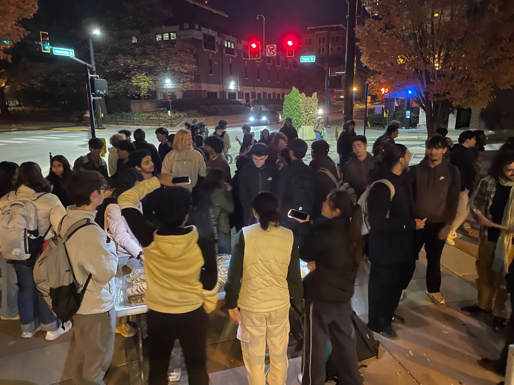
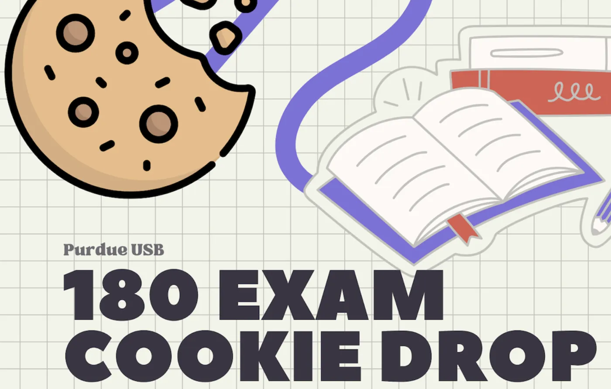
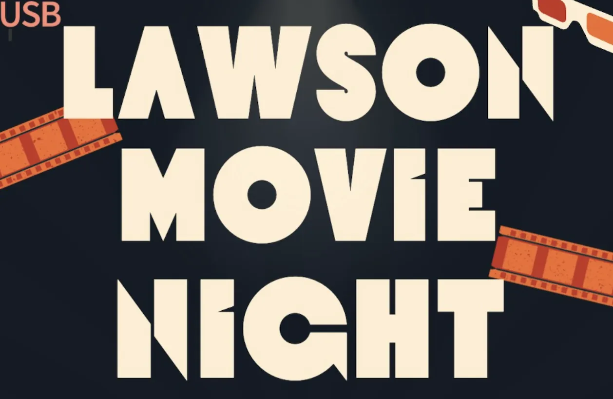
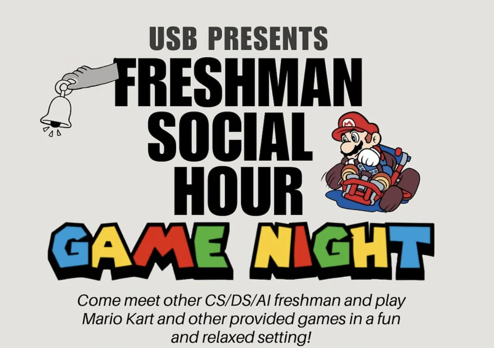
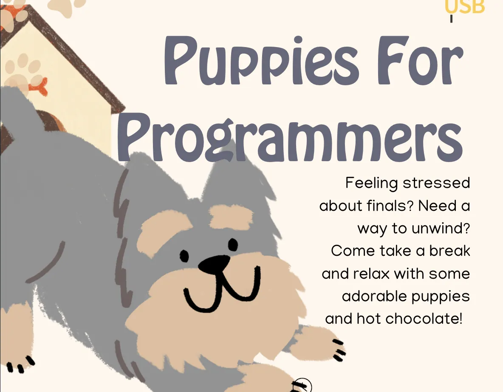

Social Wellness
An initiative tailored towards making the student experience more enjoyable, stress-relieving, and fun, steering more towards event planning and less about direct CS advice or work. Social Wellness bridges the gap between enjoyable experiences as a CS student, keeping people motivated, and wanting to touch grass. This initiative is tailored towards CS STUDENTS and not CS W*RK.
Freshman Social Hour
Freshman Social Hour aims to help CS/DS/AI freshmen meet people in their first few weeks here. This program is meant to foster a community within CS and hopefully allow freshmen to connect and make friends with people they'll see for the rest of their time here at Purdue.
We host this event during the first two weeks of the semester to help CS students get to know each other. It's a laid-back social and networking opportunity, giving students the chance to meet new people and enjoy some free food. Past events have included structured speed networking activities, game night tournaments, and scavenger hunts in Lawson.

Freshman Social Hour
Past Events

CS180 Cookie Drop
CS180 Cookie Drop

Lawson Movie Night
Lawson Movie Night

Freshman Social Hour
Freshman Social Hour

Puppies For Programmers
Puppies For Programmers